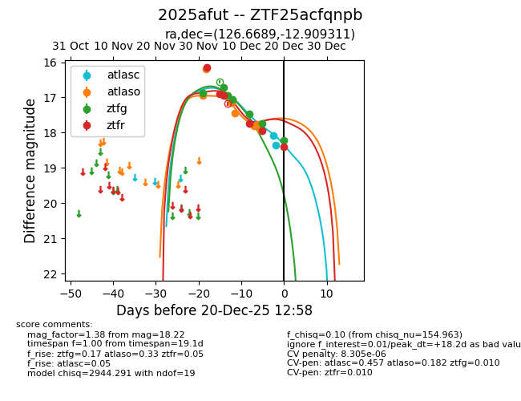
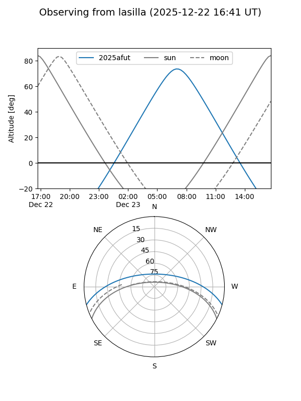
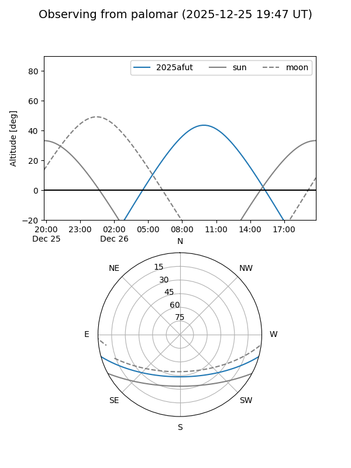

2025afut
Target 2025afut at 2025-12-18 11:17
Aliases and brokers:
FINK: fink-portal.org/ZTF25acfqnpb
Lasair: lasair-ztf.lsst.ac.uk/objects/ZTF25acfqnpb
ALeRCE: alerce.online/object/ZTF25acfqnpb
TNS: wis-tns.org/object/2025afut
YSE: ziggy.ucolick.org/yse/transient_detail/2025afut
alt names
ZTF25acfqnpb (ztf,fink_ztf)
2025afut (tns,yse)
Coordinates:
equatorial (ra, dec) = 126.6689,-12.90931
equatorial (HMS+DMS) = 08:26:40.53,-12:54:33.52
galactic (l, b) = (235.9169,+14.37885)
Photometry
last atlaso=17.89, ztfg=17.75, ztfr=17.94
7 atlaso, 6 ztfg, 5 ztfr detections
Lightcurve

Visibility


Additional plots